Having always been a collecter of interesting things from a young age, I find myself even today with collections of upon collections of neat things. My most recent collection, however, only just started a year ago, when a friend of mine brought me a small enamel pin back from a convention she had gone to. It was adorable, and before I knew it, I had begun to pick up more and more enamel pins, either from picking them up myself at booths at conventions and fairs, directly from the artist who designed them, or from friends who knew that the silly things had caught my interest. The images shown here are only a small handful of the ones I've picked up over the last year, but are definitely some of my favorites because of how I came to have them and what they mean to me.
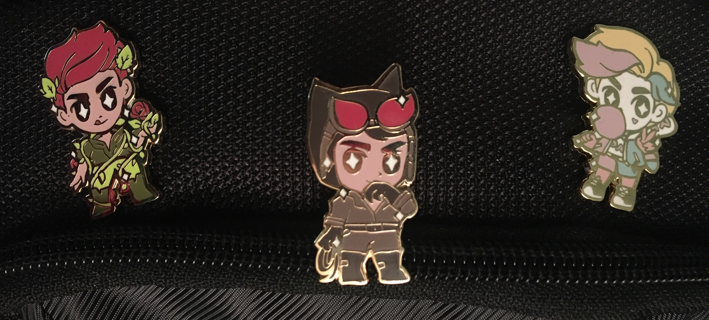 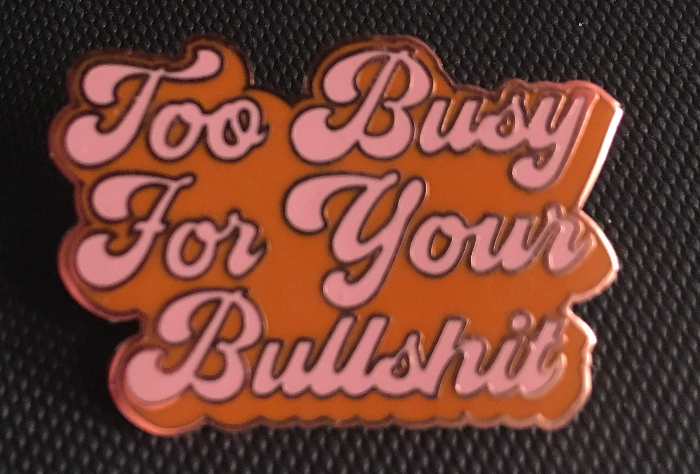 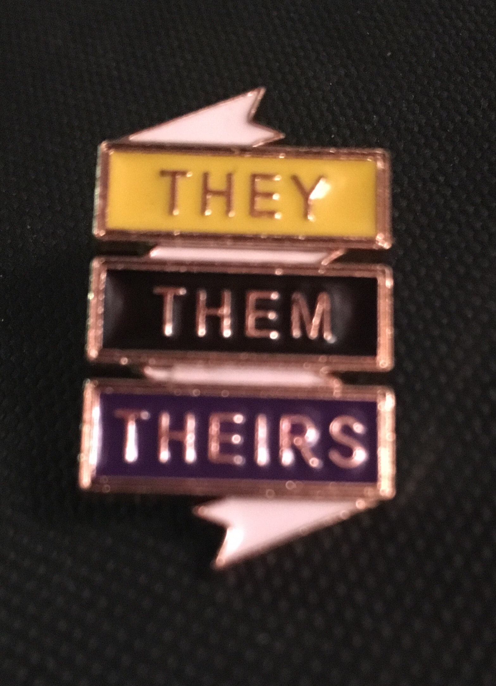 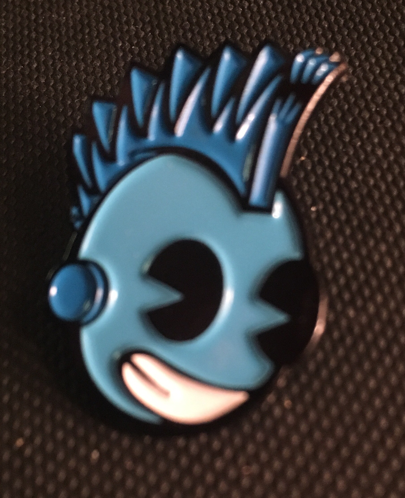 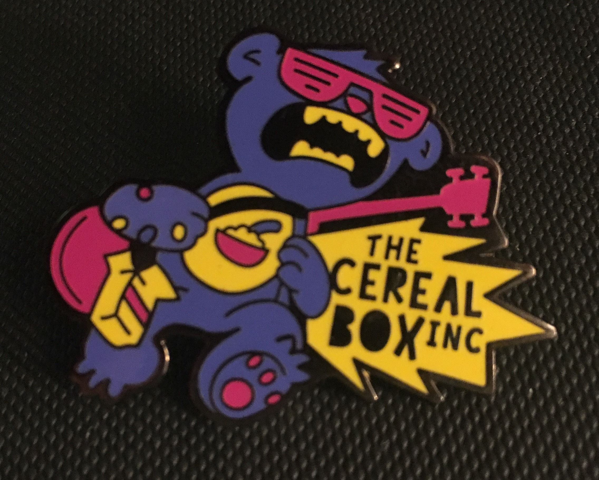 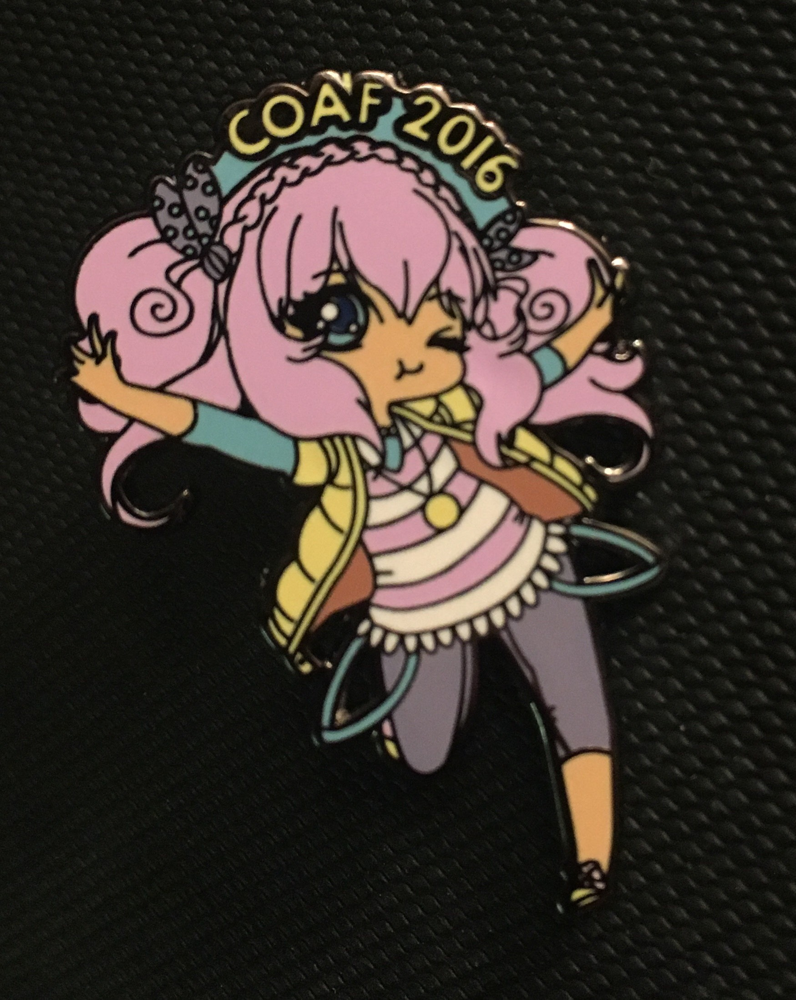 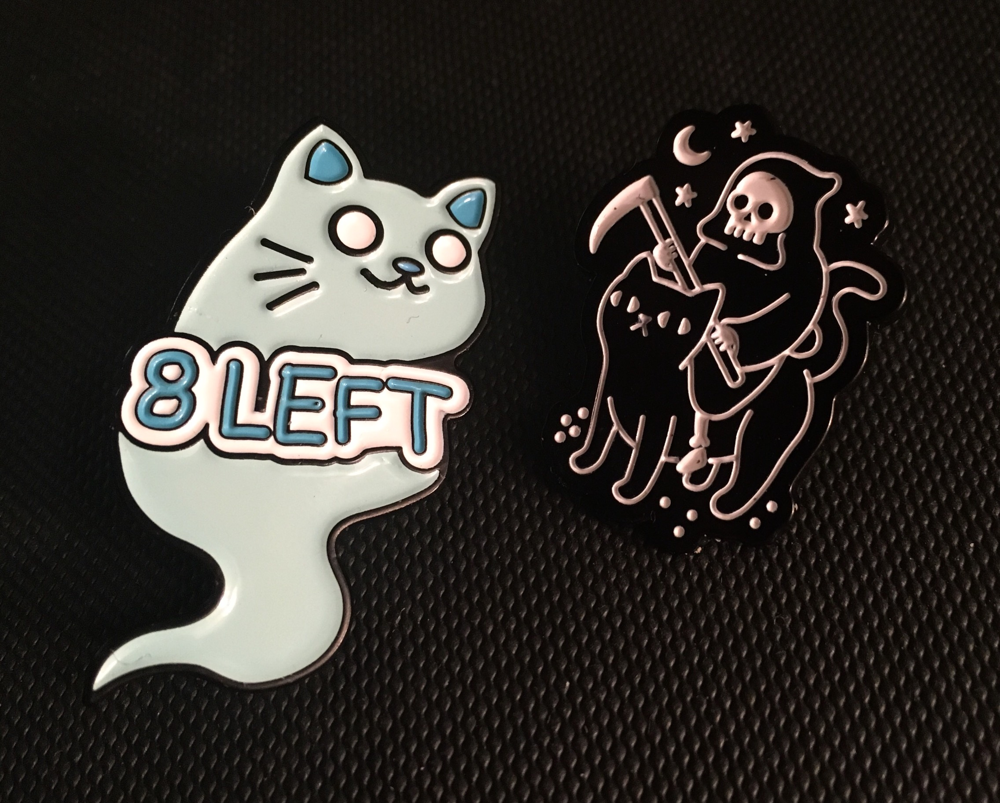 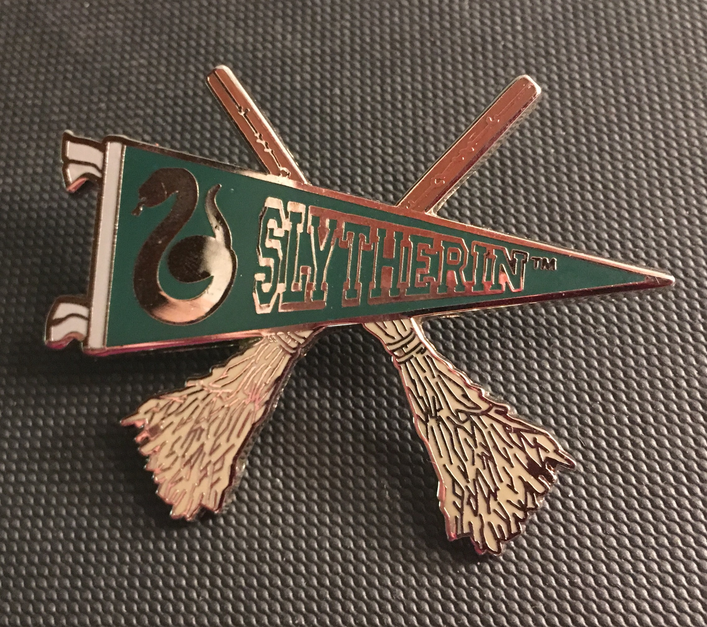 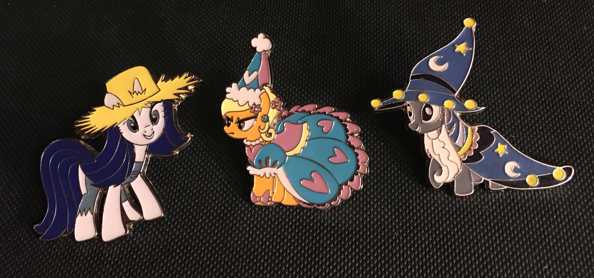 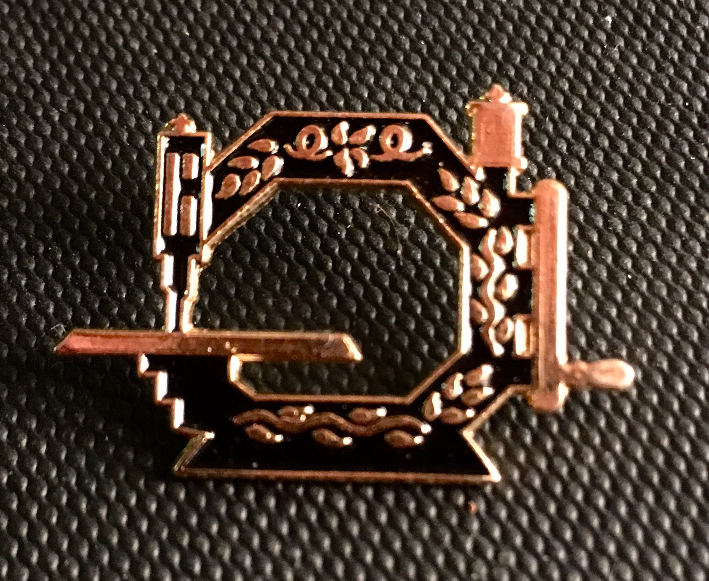 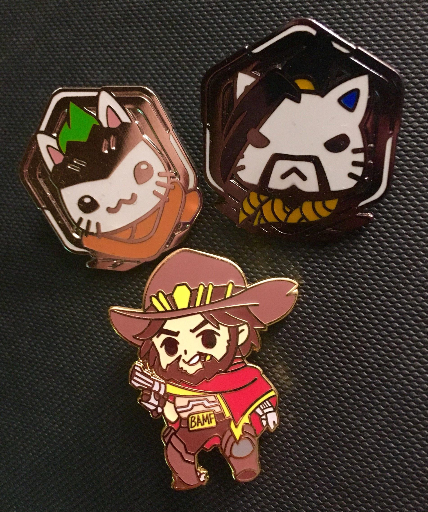